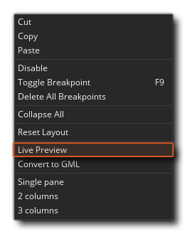
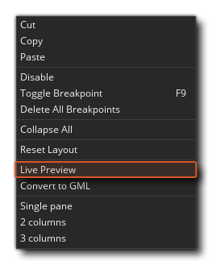
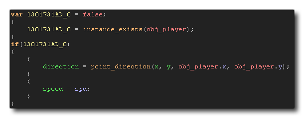

Une autre caractéristique de DnD™ est que vous pouvez le convertir en code GML ( GameMaker Language), et ainsi voir ce qui se passe exactement dans les coulisses lorsque vous utilisez des actions. Avant de changer les actions en GML, vous pouvez d'abord les prévisualiser en utilisant le bouton droit de la souris  Option de menu Live Preview: 
Option de menu Live Preview: 
Qui va ouvrir une nouvelle fenêtre: 
Au fur et à mesure que vous ajoutez, modifiez ou supprimez des actions DnD™, le GML Live Preview se met à jour pour vous montrer le code réel qui est créé "en coulisses". Le code de l'aperçu en direct ne peut pas être modifié directement, mais vous pouvez sélectionner des sections et les copier pour les coller dans des scripts GML ou des actions de code (par exemple).
Si vous décidez de convertir le DnD™ en code après avoir vu l'aperçu, vous pouvez le faire à nouveau en cliquant sur le bouton droit de la souris  dans tous les cas, espace de travail avec des actions et en sélectionnant Convertir en GML.
dans tous les cas, espace de travail avec des actions et en sélectionnant Convertir en GML. 
La première fois que vous faites cela, vous recevrez un message d'avertissement indiquant qu'il s'agit d'une conversion à sens unique, car vous pouvez convertir des actions en code, mais vous ne pourrez plus les convertir en actions individuelles plus tard. En cliquant sur "OK" ici effectuera la conversion pour vous. 
Le code résultant utilisera {} pour délimiter les actions individuelles, et vous pouvez voir clairement quelles actions concernent les fonctions ou les déclarations de variables dans le code. Si le DnD™ est plus complexe alors le code le sera aussi, mais les mêmes règles générales s'appliquent et le code sera séquentiellement identique à celui que vous avez écrit pour le DnD™. Notez que parfois le code aura des variables locales supplémentaires (temporaires) ajoutées pour stocker certaines valeurs qui seront utilisées, par exemple:
Deviendra ce code: 
Ici, le code crée d'abord une variable locale (temporaire) et la définit sur false, puis vérifie si l'instance existe et définit la variable locale sur le retour de l'appel de fonction. La variable locale est ensuite vérifiée pour voir si elle est true ou false et si c'est vrai, le reste du code est exécuté.
Lorsque vous apprenez à programmer en utilisant Drag and Drop, cela peut être un outil important pour passer à l'utilisation de GML à un stade ultérieur, mais ce n'est en aucun cas obligatoire et vous pouvez toujours faire de super jeux en utilisant DnD™! Notez que si le processus de conversion est à sens unique, après avoir converti les actions en code, vous pouvez revenir à l'utilisation de DnD™ en utilisant le menu contextuel dans l'éditeur de code et en sélectionnant "Convert To DnD™". Cela placera le code précédemment créé dans une action Execute Code et vous pourrez continuer à utiliser DnD™ comme auparavant: